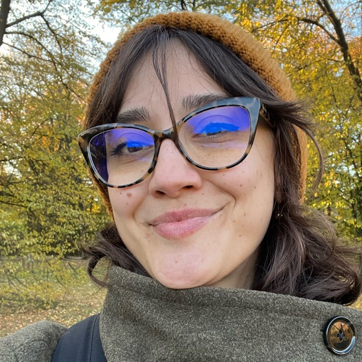

I am a Ph.D. candidate in Economics at Bilkent University, currently visiting LMU Munich and the ifo Institute for the 2026–27 academic year.
My research lies at the intersection of spatial economics and economic history, focusing on how transport infrastructure, trade networks, and industrial policy shaped the economic geography of the late Ottoman Empire and Turkey.